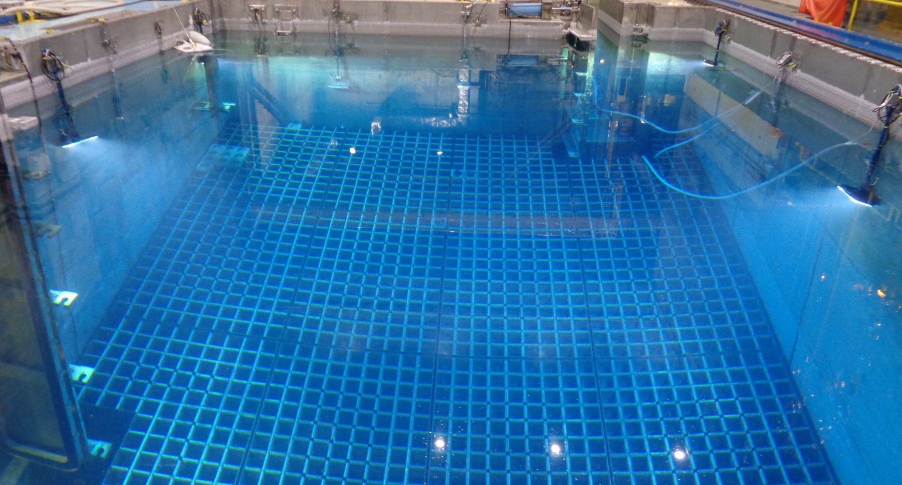
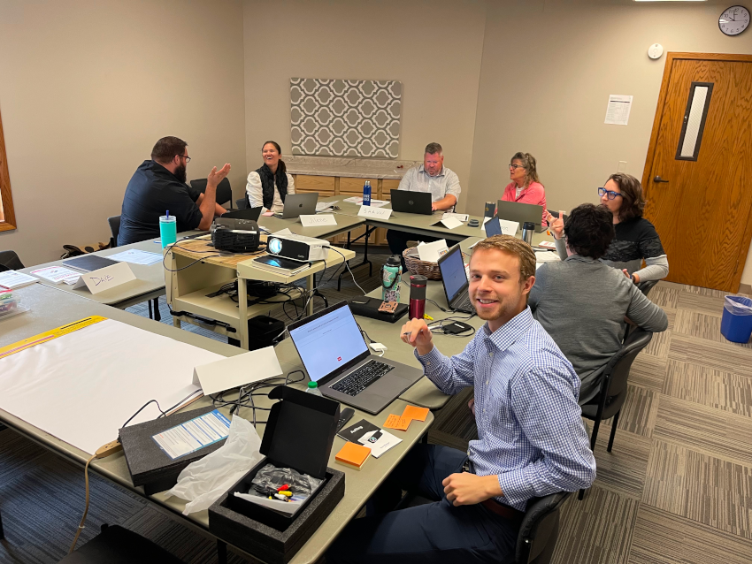
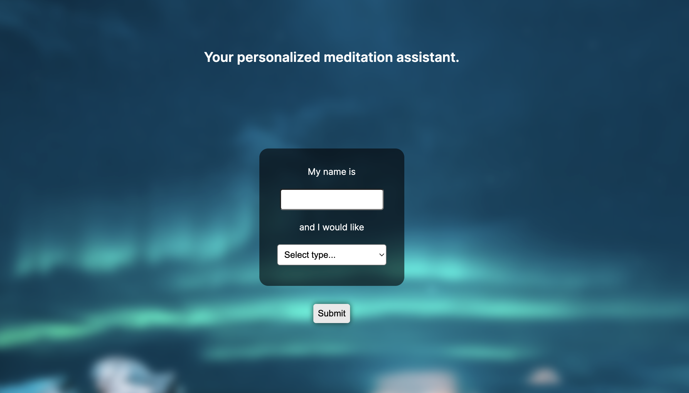

My Projects
1. Spent Fuel Cell Coordinate Calculation
During my internship with Westinghouse this summer, I was tasked with developing a Python application, complete with custom data structures and a Kivy user interface, that would significantly speed up the process of calculating fuel cell coordinates in spent nuclear fuel pools around the world. These coordinates are important to have, so that the cranes which are responsible for moving this spent fuel in and out of cells know where exactly to move. The software was a success, and will ultimately decrease the time needed to complete this task from many hours to just a few minutes. The code efficiently performs calculations by considering the given pool's specifications, all while providing a smooth user experience and accounting for real world variability and inaccuracy. The photo below shows one spent fuel pool, containing racks which in turn contain the spent fuel cells.
2. Homerun Vision App
Back in April of 2023 I began working with my father, Dr. Dave Webb, the author of Homerun Leadership, on an app that would help bring his business to more companies and teams. The app is called Homerun Vision, and it helps teams find their most important objective and brainstorm ways to contribute to achieving it. The app entered public beta testing in early September, and I received great feedback after sitting in on a real meeting where the tool was used, as seen in the photo. Homerun Vision was built with a NextJS front end and a Supabase backend, and will be released to the public in the coming months.
3. MyndfulApp
In September of 2023 I decided to tackle a project I had been considering for some time, to help grow my understanding of HTTP requests and API interaction. Using NextJS, I constructed a simple webapp designed to help people practice mindfulness in a new way. It uses the info that the user enters to generate a custom meditation for them in plaintext format from GPT 4 using the OpenAI API. The text is then sent to the ElevenLabs via their API and the user is returned a complete meditation session as an audio file, in which they are referred to by name and guided through the meditation. I plan to refine this app and bring it online in early 2024.
